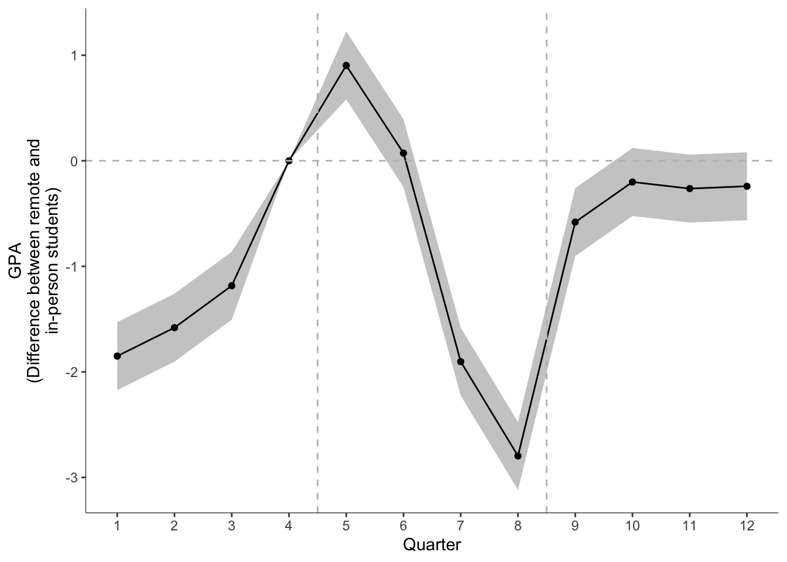

data <- haven::read_dta("../version2/gpa_analysis_file-2.dta")
data = data |> filter(samp_overall_gpa_hs_covars == 1)Reviewer Suggested Analyses
Here is the reproduced text from the review, with my best attempt at parsing his math notation.
The pattern of results reported on Figure 1 is pretty compelling evidence that students benefitted from returning to in-person schooling. Nonetheless, I find some of the decisions about research design to be odd. I think that there is a stronger design available to the authors that can be simply applied within these same data.
If I understand correctly, the authors have run separate regressions for each quarter in the post-period. Quarters 5 – 8 are periods where some students were in remote environments, and Quarters 9 – 12 all students were in in-person environments. Each of these regressions controls for GPA in Quarters 1 – 4, which are the four quarters during the year prior to the introduction of remote schooling as an option. The regressions also control for some observed student characteristics and a school fixed-effect. They then plot the estimate for \(\beta\) derived from each of the 8 respective regressions on Figure 1.
If my above description of the analysis is correct, then this analysis appears quite non-standard to me, and I think that the authors are leaving a more compelling design on the table.
It seems to me that the authors could pursue a more conventional (and more compelling) difference-in-difference approach with an event-study analysis for good measure. This would mean pooling the data into a panel where each observation is a student-quarter, and the data includes all Quarters 1 – 12. Let \(t\) index the quarter (1-12), \(i\) the student, and \(s\) the school. The difference-in-difference is then a single regression with student and school fixed-effects and time-variant controls measuring differences in student performance during the period in which some students are receiving remote instruction (\(Remote\)) – that is, it equals 1 during periods 5-8 and equals 0 in the other periods – and an interaction between that period and an indicator for whether the student ever received remote instruction (\(EverRemote\)).
Dif-in-Dif
\[ y_{ist}= \alpha+\gamma X_{ist}+ \beta Remote_t+ \theta (Remote_t \times EverRemote_i)+\delta_i+\eta_s+\epsilon_{ist} \]
In this regression, \(\beta\) is the difference in GPA during periods with and without remote instruction available for those students who are always in-person and \(\theta\) is any additional impact of the remote period among those who do receive remote instruction during that period. (Since all students were treated at the same time, this analysis should not trigger any of the recent potential objections to the difference-in-difference approach.)
The authors could then also estimate an event-study version of this model that is more aligned with their current Figure 1. Indeed, unless it is estimated imprecisely, I’d find this analysis to be even more compelling than the Dif-in-Dif approach. The model would still incorporate student fixed effects. But it replaces the dummy for the remote period with year fixed effects and interactions between EverRemote and the year fixed effects.
Event Study
\[ y_{ist}= \alpha+ \gamma X_ist + \sum_{t=1}^{12} \psi_t + \left( \sum_{t=1}^{12} \lambda_t\times EverRemote_i \right)+\delta_i+\eta_s+\mu_{ist} \]
The author could then plot each of the λt’s similar to the current Figure 1, but with (meaningful) confidence intervals around each. I’d recommend the omitted period to be Quarter 4 – the period immediately following the availability of remote schooling. We would expect to see \(\lambda_1 - \lambda_3\) near zero and insignificant indicating a lack of prior trend in GPA of eventually remote students relative to never-remote students, then \(\lambda_5 - \lambda_8\) negative and progressively trending downward as the ever-remote students receive remote instruction and the other students do not, and then \(\lambda_9 - \lambda_{12}\) trending upward and potentially (if consistent with current Figure 1) not significantly different from zero.
The above approach makes more complete use of the available data than does what the authors are currently presenting. One benefit of this approach is that by incorporating student fixed effects the analysis holds constant all time-invariant factors that could be associated with the choice of remote instruction – this is potentially more compelling than holding these attributes constant by controlling for GPA in Quarters 1 – 4, which is the author’s current approach.
Further, this panel data approach also allows for direct inference on the relationships of interest. The p-value reported on Table I in the Online Appendix, which I understand are the basis for Figure 1 in the body of the manuscript, are evaluating significance in the difference in average GPA of ever-remote and never-remote students each period. But that’s not what the authors aim to estimate. Rather, the authors are interested in measuring whether GPA changed differently for ever-remote vs never-remote students across the periods. It’s possible to get that estimate from the analysis as it is presented, but it’s not currently reflected in the presentation of results. Indeed, if we are to take their current estimates at face value, the author’s description of their results on pg. 16 drastically understates the impact they are measuring. “By the end of the school year, remote students were d= 0.17 standard deviations below their in-person counterparts”. But, these students started 0.17 standard deviations above their counterparts, so the effect at that point (not the average effect, though) would be more like 0.34 standard deviations!
I should say that I strongly suspect that the results from the above analysis would be very similar to what the authors report in the current manuscript. Nonetheless, as a reader it would strike me as odd to see an analysis that uses less of the available data than is available, especially when the approach I outline is much more the standard, at least in education policy papers.
Resuts in our data
Data cleaning
I have used the analysis-file-2.dta, which is the most recent one I have. It has 20,951 observations of 94 variables. I am keepng only people in the samp_overall_goa_hs_covars == 1, and focusing on the overall_gpa variable.
Here I am making the dataset in panel format. Each row is a student-quarter. I am keeping only the variables that are used in the analysis. I am also creating a variable called period which is the quarter number. I am making quarter 4 the reference category.
data = data %>%
select(student_id, remote_spring2021, bl_school_id, matches("overall_gpa_non")) %>%
pivot_longer(cols = -c(student_id, remote_spring2021, bl_school_id), names_to = "quarter", values_to = "gpa") %>%
separate(quarter, into = c("quarter", "year"), sep = "_") %>%
mutate(quarter = parse_number(quarter)) %>%
mutate(year = parse_number(year)) %>%
mutate(period = (year*4 + quarter)-76)
data = data %>%
mutate(remote_t = ifelse(period %in% 5:8, 1, 0),
period_dummies = factor(period))
data = data %>%
# make period 4 be the reference category
mutate(period_dummies = fct_relevel(period_dummies, "4"))I will now run both models. I may be wrong about this, but I have the following notes regarding the reviewer’s specifications:
- In both analyses, we have no time-variant controls. All controls are at baseline, so there is no variation of them within person. Thus, there is no \(X_{ist}\) in the model.
- In the same way, there is no variation in school, after accounting for each student, so there is no \(\eta_s\) in the model.
- I believe that \(\delta_i\), the student fixed effect, is included in both models, by the
index = student_idpart of the command.
Please, confirm whether this makes sense to you and whether there is anything else I should consider, such as particular treatment of errors.
Difference in Difference
Overall, when students had the choice to be remote or in-person, students scored one fewer GPA point. Students who chose to be remote scored 0.2 GPA points lower than that, relative to in-person students during that time. Note. I accidentally ran core_gpa the first time, which produces a non-significant result.
library(plm)
library(gt)model <- plm(gpa ~ remote_t + remote_t:remote_spring2021 + factor(bl_school_id), data = data, index = c("student_id", "period"), model = "within")
model %>% broom::tidy(conf.int = TRUE) %>% gt() %>% fmt_auto()| term | estimate | std.error | statistic | p.value | conf.low | conf.high |
|---|---|---|---|---|---|---|
| remote_t | −1.086 | 0.048 | −22.488 | 9.681 × 10−112 | −1.181 | −0.991 |
| remote_t:remote_spring2021 | −0.193 | 0.072 | −2.677 | 0.007 | −0.335 | −0.052 |
Event Model
This produces a result closer to what we originally had in our paper. While estimates for \(lambda_5\) and \(lambda_6\) are positive, the estimates for \(\lambda_7\) and \(\lambda_8\) are significant and negative. The resulting plot shows the same pattern as the one in the paper.
model_event <- plm(gpa ~ remote_spring2021*period_dummies, data = data, index = c("student_id", "period"), model = "within")
model_event %>% broom::tidy(conf.int = TRUE) %>% gt() %>% fmt_auto()| term | estimate | std.error | statistic | p.value | conf.low | conf.high |
|---|---|---|---|---|---|---|
| period_dummies1 | −0.306 | 0.11 | −2.789 | 0.005 | −0.522 | −0.091 |
| period_dummies2 | −1.516 | 0.11 | −13.796 | 2.912 × 10−43 | −1.731 | −1.301 |
| period_dummies3 | −1.906 | 0.11 | −17.342 | 2.789 × 10−67 | −2.121 | −1.69 |
| period_dummies5 | −2.751 | 0.11 | −25.039 | 5.657 × 10−138 | −2.967 | −2.536 |
| period_dummies6 | −3.17 | 0.11 | −28.846 | 2.809 × 10−182 | −3.385 | −2.954 |
| period_dummies7 | −1.387 | 0.11 | −12.624 | 1.648 × 10−36 | −1.603 | −1.172 |
| period_dummies8 | −0.766 | 0.11 | −6.973 | 3.125 × 10−12 | −0.982 | −0.551 |
| period_dummies9 | 0.632 | 0.11 | 5.751 | 8.907 × 10−9 | 0.417 | 0.847 |
| period_dummies10 | −0.998 | 0.11 | −9.085 | 1.056 × 10−19 | −1.214 | −0.783 |
| period_dummies11 | −1.829 | 0.11 | −16.644 | 3.987 × 10−62 | −2.044 | −1.614 |
| period_dummies12 | −1.538 | 0.11 | −13.995 | 1.831 × 10−44 | −1.753 | −1.322 |
| remote_spring2021:period_dummies1 | −1.851 | 0.164 | −11.271 | 1.900 × 10−29 | −2.172 | −1.529 |
| remote_spring2021:period_dummies2 | −1.581 | 0.164 | −9.629 | 6.164 × 10−22 | −1.903 | −1.259 |
| remote_spring2021:period_dummies3 | −1.184 | 0.164 | −7.208 | 5.696 × 10−13 | −1.505 | −0.862 |
| remote_spring2021:period_dummies5 | 0.903 | 0.164 | 5.5 | 3.796 × 10−8 | 0.581 | 1.225 |
| remote_spring2021:period_dummies6 | 0.072 | 0.164 | 0.44 | 0.66 | −0.25 | 0.394 |
| remote_spring2021:period_dummies7 | −1.903 | 0.164 | −11.589 | 4.877 × 10−31 | −2.225 | −1.581 |
| remote_spring2021:period_dummies8 | −2.796 | 0.164 | −17.031 | 5.878 × 10−65 | −3.118 | −2.475 |
| remote_spring2021:period_dummies9 | −0.581 | 0.164 | −3.54 | 4.004 × 10−4 | −0.903 | −0.259 |
| remote_spring2021:period_dummies10 | −0.201 | 0.164 | −1.224 | 0.221 | −0.523 | 0.121 |
| remote_spring2021:period_dummies11 | −0.264 | 0.164 | −1.605 | 0.108 | −0.585 | 0.058 |
| remote_spring2021:period_dummies12 | −0.241 | 0.164 | −1.469 | 0.142 | −0.563 | 0.081 |
stargazer::stargazer(model, model_event, type = "html", star.cutoffs = c(.05, .01, .001))| Dependent variable: | ||
| gpa | ||
| (1) | (2) | |
| remote_t | -1.086*** | |
| (0.048) | ||
| remote_t:remote_spring2021 | -0.193** | |
| (0.072) | ||
| period_dummies1 | -0.306** | |
| (0.110) | ||
| period_dummies2 | -1.516*** | |
| (0.110) | ||
| period_dummies3 | -1.906*** | |
| (0.110) | ||
| period_dummies5 | -2.751*** | |
| (0.110) | ||
| period_dummies6 | -3.170*** | |
| (0.110) | ||
| period_dummies7 | -1.387*** | |
| (0.110) | ||
| period_dummies8 | -0.766*** | |
| (0.110) | ||
| period_dummies9 | 0.632*** | |
| (0.110) | ||
| period_dummies10 | -0.998*** | |
| (0.110) | ||
| period_dummies11 | -1.829*** | |
| (0.110) | ||
| period_dummies12 | -1.538*** | |
| (0.110) | ||
| remote_spring2021:period_dummies1 | -1.851*** | |
| (0.164) | ||
| remote_spring2021:period_dummies2 | -1.581*** | |
| (0.164) | ||
| remote_spring2021:period_dummies3 | -1.184*** | |
| (0.164) | ||
| remote_spring2021:period_dummies5 | 0.903*** | |
| (0.164) | ||
| remote_spring2021:period_dummies6 | 0.072 | |
| (0.164) | ||
| remote_spring2021:period_dummies7 | -1.903*** | |
| (0.164) | ||
| remote_spring2021:period_dummies8 | -2.796*** | |
| (0.164) | ||
| remote_spring2021:period_dummies9 | -0.581*** | |
| (0.164) | ||
| remote_spring2021:period_dummies10 | -0.201 | |
| (0.164) | ||
| remote_spring2021:period_dummies11 | -0.264 | |
| (0.164) | ||
| remote_spring2021:period_dummies12 | -0.241 | |
| (0.164) | ||
| Observations | 118,944 | 118,944 |
| R2 | 0.010 | 0.039 |
| Adjusted R2 | -0.080 | -0.049 |
| F Statistic | 537.421*** (df = 2; 109030) | 199.967*** (df = 22; 109010) |
| Note: | p<0.05; p<0.01; p<0.001 | |
model_event %>%
broom::tidy(conf.int = TRUE) %>%
mutate(
term_type = ifelse(str_detect(term, "remote_spring2021"), "interaction", "fixed"),
term = str_remove(term, "remote_spring2021:"),
period = parse_number(term),
) %>%
select(period, term = term_type, estimate, conf.high, conf.low) %>%
filter(term == "interaction") %>%
add_row(period = 4, term = "interaction", estimate = 0, conf.high = 0 , conf.low = 0) %>%
ggplot(aes(period, estimate)) +
geom_ribbon(aes(ymin = conf.low, ymax = conf.high), fill = "gray80")+
geom_line() +
geom_point()+
scale_x_continuous(breaks = 1:12)+
geom_hline(yintercept = 0, color = "gray", linetype = 2)+
geom_vline(xintercept = c(4.5,8.5), color = "gray", linetype = 2)+
labs(x = "Quarter", y = "GPA\n(Difference between remote and\nin-person students)")
Extra notes from model summaries
model %>% summary()Oneway (individual) effect Within Model
Call:
plm(formula = gpa ~ remote_t + remote_t:remote_spring2021 + factor(bl_school_id),
data = data, model = "within", index = c("student_id", "period"))
Balanced Panel: n = 9912, T = 12, N = 118944
Residuals:
Min. 1st Qu. Median 3rd Qu. Max.
-40.07031 -2.82626 0.35231 3.14657 30.92634
Coefficients:
Estimate Std. Error t-value Pr(>|t|)
remote_t -1.085933 0.048288 -22.4885 < 2.2e-16 ***
remote_t:remote_spring2021 -0.193190 0.072157 -2.6773 0.007422 **
---
Signif. codes: 0 '***' 0.001 '**' 0.01 '*' 0.05 '.' 0.1 ' ' 1
Total Sum of Squares: 3747000
Residual Sum of Squares: 3710500
R-Squared: 0.009762
Adj. R-Squared: -0.08027
F-statistic: 537.421 on 2 and 109030 DF, p-value: < 2.22e-16model_event %>% summary()Oneway (individual) effect Within Model
Call:
plm(formula = gpa ~ remote_spring2021 * period_dummies, data = data,
model = "within", index = c("student_id", "period"))
Balanced Panel: n = 9912, T = 12, N = 118944
Residuals:
Min. 1st Qu. Median 3rd Qu. Max.
-39.17406 -2.71894 0.30176 3.10539 31.65910
Coefficients:
Estimate Std. Error t-value Pr(>|t|)
period_dummies1 -0.306437 0.109881 -2.7888 0.0052911 **
period_dummies2 -1.515963 0.109881 -13.7964 < 2.2e-16 ***
period_dummies3 -1.905559 0.109881 -17.3421 < 2.2e-16 ***
period_dummies5 -2.751309 0.109881 -25.0390 < 2.2e-16 ***
period_dummies6 -3.169569 0.109881 -28.8455 < 2.2e-16 ***
period_dummies7 -1.387151 0.109881 -12.6242 < 2.2e-16 ***
period_dummies8 -0.766172 0.109881 -6.9728 3.125e-12 ***
period_dummies9 0.631899 0.109881 5.7508 8.907e-09 ***
period_dummies10 -0.998245 0.109881 -9.0848 < 2.2e-16 ***
period_dummies11 -1.828865 0.109881 -16.6441 < 2.2e-16 ***
period_dummies12 -1.537767 0.109881 -13.9949 < 2.2e-16 ***
remote_spring2021:period_dummies1 -1.850599 0.164195 -11.2707 < 2.2e-16 ***
remote_spring2021:period_dummies2 -1.581006 0.164195 -9.6288 < 2.2e-16 ***
remote_spring2021:period_dummies3 -1.183590 0.164195 -7.2084 5.696e-13 ***
remote_spring2021:period_dummies5 0.903149 0.164195 5.5005 3.796e-08 ***
remote_spring2021:period_dummies6 0.072228 0.164195 0.4399 0.6600146
remote_spring2021:period_dummies7 -1.902883 0.164195 -11.5892 < 2.2e-16 ***
remote_spring2021:period_dummies8 -2.796395 0.164195 -17.0309 < 2.2e-16 ***
remote_spring2021:period_dummies9 -0.581237 0.164195 -3.5399 0.0004004 ***
remote_spring2021:period_dummies10 -0.201013 0.164195 -1.2242 0.2208664
remote_spring2021:period_dummies11 -0.263555 0.164195 -1.6051 0.1084665
remote_spring2021:period_dummies12 -0.241281 0.164195 -1.4695 0.1417060
---
Signif. codes: 0 '***' 0.001 '**' 0.01 '*' 0.05 '.' 0.1 ' ' 1
Total Sum of Squares: 3747000
Residual Sum of Squares: 3601700
R-Squared: 0.038791
Adj. R-Squared: -0.048794
F-statistic: 199.967 on 22 and 109010 DF, p-value: < 2.22e-16